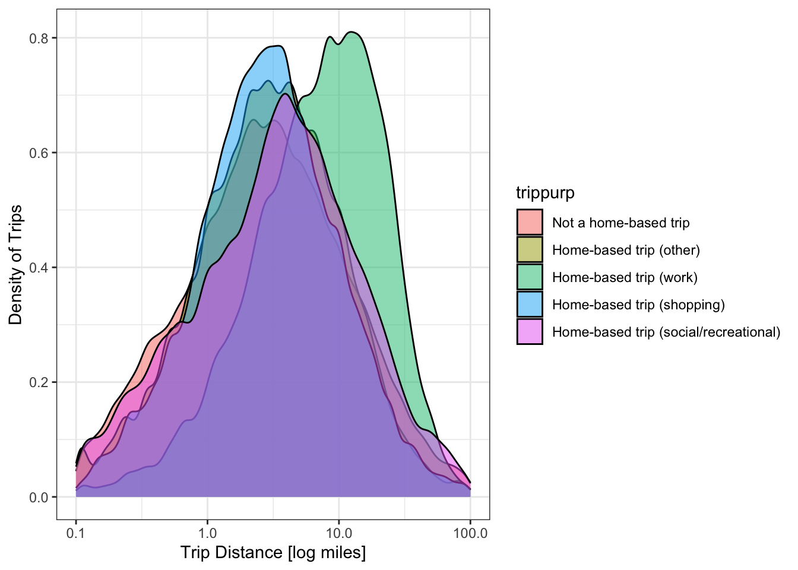

Chapter 1 Building Blocks
This chapter contains concepts, definitions, and mathematical techniques that will be used throughout the semester. Critical terms to understand are given in bold.
1.1 Planning for Human Systems
If you look out on any sufficiently busy road, you will see a steady stream of vehicles passing by. Each vehicle is largely indistinguishable from the others, and it is easy as an engineer responsible for that road to see the cars driving by as little more than an input to a problem. But the people inside the cars should not be indistinguishable from each other. Each person who is driving or riding in each of those cars has their own reasons to be driving on that road. One person might be driving to work; one person might be trying to get home to his or her family. Another car might hold a family going on vacation, or a group of friends heading to a movie.
If you don’t recognize that each person who travels is different, with different needs and purposes, then it is easy to look only at the supply of transportation infrastructure. Is the road wide enough? Is the traffic signal timed appropriately? But as with anything in the economy transportation is a function of both supply and demand. Why are so many people trying to get down this one road right now? Why didn’t more people take transit? Why didn’t some people choose a different destination? Or why didn’t some people just stay home in the first place?
Transportation planning therefore must be concerned with both the supply of infrastructure and the demand for travel. For the most part, economists consider travel a derived demand, which means people only go to the hassle of travelling somewhere if they have some other reason to be there. No one typically just drives around (with the possible exception of teenagers on a weekend night); they are going to work, or school, or a social engagement, or something.
Travel demand has not been stable over time. The availability of inexpensive automobiles in the 20th Century created demand for inter-city and intra-urban roads that did not exist before. Rising labor force participation rates for women radically changed the number and types of trips the average household makes in an average day. Technological developments like teleconferencing and smartphone-enabled ridehailing could generate different trends. At the same time, populations in most regions continue to grow. Planning for future transportation infrastructure is difficult because of the uncertainty of the future, but it is necessary to keep economies rolling and preseve or improve quality of life.
In the United States and most societies with some democratic process, decisions about what transportation facilities to build, which policies to implement, and how to build a city generally fall to decision makers. These decision makers consist of mayors, city councils, planning commissions, state legislatures, Congress, state and federal agencies, and innumerable others who are elected by the public, or who are accountable to others who have been. In making decisions about how to spend public money on civil infrastructure or enact tax or other policies, decision makers consult plans developed by professional engineers and planners.
As engineers and planners, we are rarely in a position to make decisions, but we have a responsibility to provide accurate data and technical analysis to support decision makers. There is a misconception that transportation planners must accurately predict the future to be relevant. The purpose of transportation planning is not to perfectly envision what will happen under every scenario, it is to provide information that will help make good decisions now so that the future is at least as pleasant as the present. We all have hopes for what our lives and community will look like ten or twenty years from now; it may not be possible for anyone to provide analysis entirely free of all personal bias. But as you conduct your work as an engineer and planner, you owe the public your integrity and competence as you provide information to their representatives.
1.2 The Four-Step Process
Transportation planning often involves a four-step travel model, which is a a traditional method used by transportation planners. A four-step model consists of the following steps:
- Trip Generation, which seeks to estimate how many trips are generated, or start in a specific Travel Analysis Zone (TAZ). Trip generation does this by using economic data about the type and amount of development in the zone. If a zone has a high number of residential buildings, it is assumed that more productions originate in that zone than would in a zone of commercial or retail buildings.
- Trip Distribution seeks to estimate where generated trips go. Origins and destinations are matched in this step. These completed trips can occur within the same zone, or be inter-zonal.
- Mode Choice considers a number of factors to estimate what modes individuals or groups will take. Some of the data that can be used include: travel time, wait time, cost, and accessibility.
- Trip Assignment seeks to determine the route that users choose between origin and destination. The route is chosen based on a combined analysis of data, including travel time, cost, mode choice, and origin and destination location.
1.3 Travel Model Building Blocks
In this section, we present some of the terms used in transportation planning and modeling, as well as some of the data objects used in constructing travel demand models.
1.3.1 Household Travel Surveys
Travel demand models try to represent individual behavior. How many trips does the average household make per day? How do people respond to changes in transit fare? And how can a modeler know if the model accurately reflects total traffic?
Household travel surveys are a critical component of much travel modeling practice and research, and are a primary way to answer some of these questions. In a travel survey, a regional planning agency1 will recruit households to participate in the survey. Often there is some kind of reward to encourage participation, like a gift card or raffle. Once recruited, household members fill out a diary of their activities on an assigned day; Figure 1.1 shows an example of one activity from a survey diary. From the example, you can see the kinds of data that are available: where the person traveled, which travel mode they used, and what was their reason for making the trip.
Figure 1.1: Example travel survey diary entry.
Not all travel surveys are filled in on forms; nowadays telephone interviews or mobile applications are more common (more on that below). But for decades, paper travel surveys were the basis of almost all transportation behavior science.
Once the surveys are collected, the data is usually processed into several tables stored in different files or a database.
- A Households table has one row for each household in the dataset, including information about the number of people in the household, the number of vehicles, and the household income.
- A Persons table has one row for each person in the dataset — including which household they are a part of (to link with the households table) — and personal attributes like age, student or worker status.
- A Vehicles table has one row for each vehicle owned by the households in in the dataset, including attributes like model year, vehicle class, and fuel efficiency.
- A Trips table has one row for each trip taken by each person in the dataset. This table can be linked against the other tables if necessary, and contains information like the trip purpose and many other elements collected with the form in Figure 1.1.
Tables 1.1 through 1.4 show data collected from one household in the 2017 National Household Travel Survey. The household contains four people, two of whom are working adults in their late thirties. (the other two are children, and the NHTS did not collect their trip data). The household has two vehicles, and on the survey travel day person 2 appeared to make a few very long trips. It’s impossible to know if this is a typical day for this person or not, but that’s the data that was collected.
| houseid | hhsize | numadlt | wrkcount | hhvehcnt | hhfaminc | wthhfin |
|---|---|---|---|---|---|---|
| 30000082 | 4 | 2 | 2 | 2 | $100,000 to $124,999 | 1148.809 |
| houseid | personid | r_age | educ | r_sex |
|---|---|---|---|---|
| 30000082 | 01 | 39 | Graduate degree or professional degree | Female |
| 30000082 | 02 | 38 | Bachelor’s degree | Male |
| houseid | vehid | vehyear | make | model | fueltype | od_read |
|---|---|---|---|---|---|---|
| 30000082 | 01 | 2011 | Mazda | Mazda3 | Gas | 83644 |
| 30000082 | 02 | 2007 | Toyota | Yaris | Gas | 120615 |
| houseid | personid | strttime | endtime | trpmiles | trptrans | trippurp |
|---|---|---|---|---|---|---|
| 30000082 | 01 | 2017-10-10 07:45:00 | 2017-10-10 07:52:00 | 2.710 | Car | Home-based trip (other) |
| 30000082 | 01 | 2017-10-10 08:09:00 | 2017-10-10 08:13:00 | 1.432 | Car | Not a home-based trip |
| 30000082 | 01 | 2017-10-10 08:24:00 | 2017-10-10 08:28:00 | 0.777 | Car | Not a home-based trip |
| 30000082 | 01 | 2017-10-10 16:53:00 | 2017-10-10 16:57:00 | 1.075 | Car | Not a home-based trip |
| 30000082 | 01 | 2017-10-10 17:18:00 | 2017-10-10 17:26:00 | 2.727 | Car | Home-based trip (other) |
| 30000082 | 02 | 2017-10-10 07:30:00 | 2017-10-10 07:33:00 | 2.136 | Car | Home-based trip (shopping) |
| 30000082 | 02 | 2017-10-10 07:38:00 | 2017-10-10 08:50:00 | 88.581 | Car | Not a home-based trip |
| 30000082 | 02 | 2017-10-10 08:58:00 | 2017-10-10 09:49:00 | 45.341 | Car | Not a home-based trip |
| 30000082 | 02 | 2017-10-10 10:51:00 | 2017-10-10 12:24:00 | 28.208 | Car | Not a home-based trip |
| 30000082 | 02 | 2017-10-10 17:00:00 | 2017-10-10 17:05:00 | 0.239 | Walk | Not a home-based trip |
| 30000082 | 02 | 2017-10-10 19:15:00 | 2017-10-10 19:26:00 | 0.267 | Walk | Not a home-based trip |
| 30000082 | 02 | 2017-10-10 19:30:00 | 2017-10-10 20:43:00 | 29.293 | Car | Not a home-based trip |
Note that that the households data in Table 1.1 contains a
numeric column called wthhfin. This is a survey weight. Because it is impossible
to sample everyone in a population, there needs to be a way to expand the survey
to the population. What this number means is that the selected household carries
the same weight in this survey as approximately 1100 households in the general
population. Also note that not every household’s weight will be equal; because
some population groups have different survey response weights, some households
will need to be weighted more heavily so that the survey reflects the general
population. Most software packages have functions that allow you to
calculate statistics or estimate models including weighted values. The code
chunk below shows how to calculate the average number of workers per household
with and without weights in R; as you can see, omitting the weights leads
to a substantial change in the survey analysis.
## [1] 0.9891438# Average workers per household, weighted
weighted.mean(nhts_households$wrkcount, nhts_households$wthhfin)## [1] 1.173206Travel survey methodology is changing rapidly as a result of mobile devices with location capabilities. First, most travel surveys are now administered through a mobile application: respondents are invited to install an app on their smartphone that tracks the respondent’s position and occasionally asks questions about trip purpose or mode. This makes collecting and cleaning data considerably easier than traditional paper surveys, and it also lowers the response burden for the survey participants. Another change that mobile data has brought to travel surveys is the introduction of large datasets of location information that planners can purchase directly from cellular providers or third-party providers. Though these data do not have all the information on demographics and preferences a survey would provide, they provide a considerably larger and more detailed sample on things like overall trip flows. As a result, it may be possible to collect surveys less frequently, or to reduce survey sample sizes.
1.3.2 Travel Analysis Zones
Activities in travel demand models happen in Travel Analysis Zones (TAZs), and the model tries to represent trips between the TAZs. Because trips inside a TAZ — called intrazonal trips — are not included in the travel model, each TAZ should be sufficiently small such that these trips do not affect the models’ ability to forecast travel on roadways. The following rules are helpful when drawing TAZ’s:
- The TAZ should not stretch across major roadways
- The TAZ should contain principally one land use, though in some areas this is not possible.
- In areas with more dense population, the TAZ should be smaller.
Each TAZ is associated with socioeconomic (SE) data, or information about the people, businesses, and other activities that are located in the TAZ.
Figure 1.2: Travel Analysis Zones in Central Roanoke.
Households are a basic unit of analysis in many economic and statistical analyses. A household typically consists of one or more persons who reside in the same dwelling. Individuals living in the same dwelling can make up a family or other group of individuals; that is, a group of roommates is considered a household. Not everyone lives in households, however; some people live in what are called group quarters: military barracks, college dormitories, monasteries, prisons, etc. Travel models need to handle these people as well, but in this class we will focus on people who live in households.
Firms are another basic unit of analysis in many economic and statistical analyses. A firm is a profit-seeking person or entity that provides goods or services in exchange for monetary transactions. A firm can provide raw resources, manufactured resources, other services, or be a place of employment. In some cases, a firm may be another household. Each firm will have an industry type. Examples of industry types include office, service, manufacturing, retail, etc. In many SE data files, firms are simply represented as the total number of jobs in a TAZ belonging to each industry. Other Institutions including academic, government, and non-profit entities will also be represented in the SE data in terms of their jobs.
It is important to be precise in our definitions when put all of these different things into a single file. A typical SE table for a small region is given in Table 1.5. Note the following relationships:
- Persons live in Households
- Workers are Persons who have a Job
- Firms have employees who work at a Jobs
When we talk about “how many jobs” are in a TAZ, we mean “How many people do the firms located in that TAZ employ,” and not “how many people who live in that TAZ are workers.”
| taz | persons | hh | workers | retail | office | manufacturing |
|---|---|---|---|---|---|---|
| 1 | 48 | 46 | 28 | 139 | 55 | 2 |
| 2 | 47 | 31 | 21 | 118 | 53 | 11 |
| 3 | 35 | 32 | 12 | 132 | 86 | 0 |
Alice lives with her husband in zone \(A\) and works as an accountant in zone \(B\). Her husband does not currently work. Fill out the SE table from Table 1.5 with just this household’s information.
Two persons live in one household with one worker in zone A. The firm Alice works at has an office job for her in Zone B.
| taz | persons | hh | workers | retail | office | manufacturing |
|---|---|---|---|---|---|---|
| A | 2 | 1 | 1 | |||
| B | 1 |
1.3.3 Highway Networks
Nodes Centroids are special nodes that indicate where the activities of a TAZ are located on average.
Links Centroid connectors are special links that connect centroids to a network.
Functional Types or Functional Classes are used to describe each road in a system, and its importance to that system. The types include: freeway, principal arterial, minor arterial, major collector, minor collector, local street, and cul-de-sac.
Freeways are provided almost exclusively to enhance mobility for through traffic. Access to freeways is provided only at specific grade-separated interhcanges, with no direct access to the freeway from adjacent land except by way of those interachanges.
Major and minor arterials primary function is to provide mobility of through traffic. However, arterials also connect to both collectors and local roads and streets and many arteirals provide direct access to adjacent development.
Major and minor collectors connect arterials to local roads and provide access to adjacent development. Mobility for through traffic is less important.
Local streets exist primarily to serve adjacent development. Mobility for through traffic is not important.
Cul-de-sacs only serve adjacent development.
*See (A Policy on Geometric Design of Highways and Streets, 7th Edition, 2018) for more information.

Figure 1.3: UDOT Functional Classes.
Streets of a functional class below collector are almost never included in travel models, unless they provide essential connectivity between other roads. Entire neighborhoods of local streets may be represented by just a few centroid connectors.
Free-flow speed, or FFS, is the speed vehicles travel when the road is empty.
Link capacity is the maximum number of vehicles a link, or section of road, can optimally transport between two nodes. The capacity is a function of functional type, lanes, free-flow speed, area type, etc.
1.3.4 Matrices
Matrices represent between zones. Convention has us call the origin zones \(i\) in the rows and and the destination zones \(j\) in the columns. Matrices in travel models are always symmetrical. There are two kinds of information we typically represent with matrices: costs and flows.
Cost matrices, or skims, are matrices where the cells contain estimates of travel time or cost. They are called skims because they are the results of skimming a network to find the shortest path between each pair of TAZ centroids.
Flow matrices, represent flows of people or vehicles from each origin to each destination. The number in the corresponding cell \(T_{ij}\) is the total number of trips made, and represents the demand between two zones in a network.
1.4 Statistical and Mathematical Techniques
Many elements of travel modeling and forecasting require complex numerical and quantitative techniques. In this section we will present some of these techniques.
1.4.1 Continuous and Discrete Distributions
In general, statistical variables can fall into one of two categories:
- Continuous variables can take any numeric value along some range
- Discrete variables can take some limited set of predetermined values
A simplistic definition would be to say that continuous variables are numeric and discrete variables are non-numeric. A continuous variable has statistics such as a mean, but these statistics do not make sense on discrete variables. In the NHTS trips dataset, we can compute a mean trip miles, but we cannot compute a mean trip purpose. Or we can’t compute a mean that makes sense.
## [1] 10.69119# mean of categorical variable: trip purpose
weighted.mean(nhts_trips$trippurp, nhts_trips$wttrdfin)## Error in x * w: non-numeric argument to binary operatorWhat we can do, however, is we can print a summary table showing the number of observations that fit in each trip purpose category. Note that sometimes there will be a category devoted to data that is missing or otherwise invalid.
##
## -9 HBO HBSHOP HBSOCREC HBW NHB
## 32 190022 195188 110235 117368 310727Sometimes it is handy to split a continuous variable into categories so that you can treat it as a discrete variable.
nhts_trips$miles_cat <- cut(nhts_trips$trpmiles, breaks = c(0, 10, 20, 30, 50, 100, Inf))
table(nhts_trips$miles_cat)##
## (0,10] (10,20] (20,30] (30,50] (50,100] (100,Inf]
## 719812 113383 38724 25064 14388 11060When we visualize the distribution of a continuous variable, we might use a histogram or density plot, but with a discrete variable we would use a bar chart.
ggplot(nhts_trips, aes(x = trpmiles, weight = wttrdfin)) +
geom_histogram() + xlab("Trip Distance [Miles]") + ylab("Weighted Trips") +
scale_x_continuous(limits = c(0, 50))## `stat_bin()` using `bins = 30`. Pick better value with `binwidth`.Figure 1.4: Visualizing a continuous distribution with a histogram.
ggplot(nhts_trips, aes(x = as_factor(trippurp, levels = "labels"),
weight = wttrdfin)) +
geom_bar() + xlab("Trip Purpose") + ylab("Weighted Trips") Figure 1.5: Visualizing a discrete distribution with a bar chart.
To this point we’ve only looked at the distribution of one variable at a time. There are lots of cases where someone might want to consider the joint distribution of two variables. This joint distribution tells you what is happening with one variable while the other variable changes. In a table like the one below, the margins of the table (the row and column sums) contain the single variable distribution. So sometimes we call these the marginal distributions.
##
## -9 HBO HBSHOP HBSOCREC HBW NHB
## (0,10] 23 156315 162602 84980 67162 248730
## (10,20] 6 20856 19881 13054 28018 31568
## (20,30] 1 5635 5469 4361 12087 11171
## (30,50] 0 3592 3427 3267 7117 7661
## (50,100] 2 1943 2150 2504 2332 5457
## (100,Inf] 0 1231 1634 1844 597 5754We can visualize joint distributions as well, and sometimes the results are quite nice.

1.4.2 Iterative Proportional Fitting
Iterative Proportional Fitting
1.4.3 Regression Analysis
We often want to know what will happen
1.4.4 Numerical Optimization
Let’s say you have a function with a
Homework
Some of these questions require a completed run of the demonstration model. For instructions on accessing and running the model, see the Appendix
How does recreational transportation — i.e., going for a bike ride — fit into the theory of derived demand for travel? Write a short paragraph explaining your thoughts based on what we covered in lecture and the text.
Think about a recent transportation-related construction project you have seen in your community. Find an article in a local newspaper discussing the project. Why was the project built (or why is it being built)? Who supports the project? Does anyone oppose the project? Write a short paragraph including a link and citation to the article.
Download the rmove mobile application, and log in with the password given you by the instructor. Track your daily activies and trips for three days. You may include at most one weekend day. Write a short summary of your activities, including:
- How many trips you took each day
- The mode split of all your trips
With the TAZ layer and socioeconomic data in the demonstration model, make a set of choropleth maps showing: total households; household density; total jobs; job density; density of manufacturing vs office vs retail employment. Compare your maps with aerial imagery from Google Maps or OpenStreetMap. Describe the spatial patterns of the socioeconomic data in the model region. Identify which zones constitute the central business district, and identify any outlying employment centers.
With the highway network layer in the demonstration model, create maps showing: link functional type; link free flow speed; and link hourly capacity. Compare your maps with aerial imagery from Google Maps or OpenStreetMap. Identify the major freeways and principal arterials in the model region. Note: you will need to run the demonstration model through the network setup step to calculate the capacities and append them to the link.
Find the shortest free-flow speed path along the network between two zones. Find the shortest distance path between the same two zones. Are the paths the same? Do the paths match what an online mapping service shows for a trip in the middle of the night?
Open the highway assignment report, which shows vehicle hours and miles traveled by facility type. What percent of the region’s VMT occurs on freeways? What percent of the region’s lane-miles are freeways?
Open the output highway network. Create a map of the highway links showing PM period level of service based on the volume to capacity ratios in the table below. How would you characterize traffic in Roanoke? Which is the worst-performing major facility?
References
A Policy on Geometric Design of Highways and Streets, 7th Edition, 2018. The Green Book. American Association of State Highway; Transportation Officials. https://books.google.com/books?id=MWHBDwAAQBAJ.
Like a Metropolitan Planning Organization (MPO).↩︎